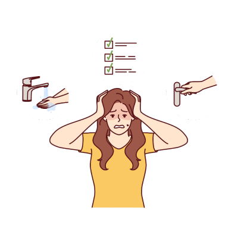

What is Obsessive-Compulsive Disorder (OCD)?

Obsessive-Compulsive Disorder (OCD) is a mental health disorder characterized by persistent, unwanted
thoughts (obsessions) and repetitive behaviors (compulsions). People with OCD feel compelled to perform
certain rituals or behaviors to relieve the distress caused by their obsessive thoughts, but these actions
may only offer temporary relief and are often excessive or unrealistic.
OCD can significantly impact a person's daily life, as individuals may spend hours each day engaging in
compulsive behaviors or avoiding certain situations due to their obsessions. However, with appropriate
treatment, most people with OCD can manage their symptoms effectively.
Symptoms of Obsessive-Compulsive Disorder
The symptoms of OCD can vary, but common signs include:
- Obsessive Thoughts: Recurrent, intrusive thoughts or mental images that cause anxiety
or distress, such as fears of contamination, harm, or making a mistake.
- Compulsive Behaviors: Repetitive actions or rituals performed to reduce the anxiety
caused by obsessive thoughts, such as washing, checking, or arranging things in a specific order.
- Difficulty Controlling Thoughts or Behaviors: Despite recognizing that their thoughts
or behaviors are excessive or unreasonable, people with OCD feel unable to stop them.
- Interference with Daily Life: OCD can interfere with work, school, and social activities,
as the person may spend significant time on compulsions or avoid situations due to obsessive fears.
Causes of Obsessive-Compulsive Disorder
The exact cause of OCD isn't fully understood, but several factors may contribute to its development:
- Genetics: A family history of OCD or other mental health conditions may increase the
risk of developing the disorder.
- Brain Structure and Function: Some research suggests that certain brain circuits may
be involved in OCD. Changes in neurotransmitters, such as serotonin, may also play a role.
- Environmental Stress: Stressful life events or trauma may trigger or worsen OCD in
individuals who are predisposed to the disorder.
Treatment for Obsessive-Compulsive Disorder
There are several effective treatments available to help manage OCD symptoms:
- Cognitive Behavioral Therapy (CBT): CBT, specifically a type called Exposure and
Response Prevention (ERP), is a highly effective treatment for OCD. It involves gradually exposing
the person to their feared situations or thoughts and preventing the compulsive behavior.
- Medication: Selective serotonin reuptake inhibitors (SSRIs), a type of antidepressant,
are often prescribed to help manage OCD symptoms by increasing serotonin levels in the brain.
- Mindfulness and Relaxation Techniques: Practices such as mindfulness meditation can
help individuals manage the anxiety associated with OCD and improve their ability to control compulsive
behaviors.
Working closely with a healthcare professional can help identify the best treatment plan for the individual.